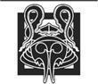

Falme
Yanlarından, birbirlerine gümüş bir yularla bağlı iki kadın geçip taş döşeli sokaktan Falme limanına yönelirken, Nynaeve Elayne'i tekrar bir kumaş tacirinin dükkânıyla çömlekçinin atölyesi arasındaki dar sokağa itti. Bu ikilinin onlara fazla yaklaşmasına izin veremezlerdi. Sokaktaki insanlar bu ikiliye Seanchan askerlerine veya ara sıra geçen soyluların, hava iyice soğuduğu için kalın perdelerle örtülü tahtırevanlarına olduğundan bile daha çabuk yol veriyordu. Sokak ressamları bile diğer herkesi rahatsız etmelerine rağmen, onların tebeşir veya karakalem resimlerini yapmayı teklif etmiyordu. Sul'dam ile damanenin kalabalığın içinden geçmelerini izlerken, Nynaeve dudaklarını sıktı. Kasabada haftalar geçirdikten sonra bile, bu manzara içini bulandırıyordu. Bunu herhangi bir kadına, Moiraine veya Liandrin'e bile yapmayı tasavvur edemiyordu.
Eh, belki Liandrin'e olabilir, diye itiraf etti keyifsizce. Zaman zaman, geceleri, ikisinin tuttuğu bir balıkçının üzerindeki ufak, pis kokulu odada, eline geçirdiği zaman Liandrin'e yapmak istediklerini düşünüyordu. Suroth'tan bile fazla Liandrin'e. Birden çok defa, kendi yaratıcılığından büyük haz duyduğu zamanlarda bile, kendindeki acımasızlık karşısında hayrete düşmüştü.
İkiliyi gözden kaçırmamaya çalışırken, gözleri yer değiştiren kalabalık tarafından gizlenmeden önce, sokağın hayli ilerisinde gördüğü sıska bir adama ilişti. Nynaeve dar bir yüzdeki iri bir burnu bir an gördü. Adam giysilerinin üzerine Seanchan kesimli, gösterişli bir bronz kadife cüppe giymişti, fakat Nynaeve, adamın bir Seanchan olmadığı kanısındaydı, ancak adamın peşinden gelen hizmetkâr kesinlikle Seanchandı ve şakağının bir tarafının tıraşlı olmasına bakılırsa, yüksek düzeyli bir hizmetkârdı. Civar halkı, Seanchan modasını, özellikle de bunu benimsememişti. O, Padan Fain'e benziyordu, diye düşündü gördüklerine inanamayarak. Olamaz, Burada değil.
"Nynaeve," dedi Elayne usulca, "artık yola devam edebilir miyiz? Elma satan adam, tezgâhına az önce orada daha fazla elma olduğunu düşünürmüş gibi bakıyor ve ceplerimde ne olduğunu merak etmesini istemiyorum."
İkisinin de sırtında postu içeri çevrilmiş ve göğsüne canlı kırmızı renkte sarmallar işlenmiş koyun derisinden paltolar vardı. Bu bir taşra giysisiydi, ama pek çok insanın çiftlikler ve köylerden gelmiş olduğu Falme'de pek göze çarpmıyordu. Onca yabancının arasında ikisi fark edilmemeyi başarmıştı. Nynaeve örgüsünü açmıştı ve kendi kuyruğunu ısıran yılan motifli altın yüzüğü, artık elbisesinin altında, boynundaki deri kayışın üzerinde Lan'in ağır yüzüğünün yanında duruyordu.
Elayne'in paltosunun geniş cepleri, şüphe çekecek bir şekilde şişkindi.
"O elmaları çaldın mı?" diye tısladı Nynaeve sessizce ve Elayne'i tekrar kalabalık sokağa çekerken "Elayne, çalmamıza gerek yok. En azından şimdilik."
"Yok mu? Ne kadar paramız kaldı? Son birkaç gündür pek çok kez yemek saatlerinde 'acıkmamış' oluyorsun da."
Nynaeve midesindeki boşluğu yok saymaya çalışarak "Eh, acıkmadım," diye onu tersledi. Her şeyin fiyatı, beklediğinden hayli fazlaydı; yerli halkın Seanchanlar geldiğinden beri fiyatların yükseldiğinden şikayet ettiğini duymuştu. "Onlardan birini bana ver." Elayne'in cebinden çıkardığı elma ufak ve sertti, ama Nynaeve ısırdığında leziz bir tatlılıkla haşırdadı. Nynaeve, dudaklarındaki elma suyunu yaladı. "Nasıl becerdin-" Elayne'i aniden çekerek durdurdu ve yüzüne baktı. "Şey mi yaptın...? Şey mi...?" Yanından bunca insan akın akın geçerken bunu nasıl söyleyeceğini bulamadı, ama Elayne onu anladı.
"Sadece biraz. Yumuşak yerleri olan eski kavun yığınını düşürdüm, adam onları tekrar yerine yerleştirmeye başlayınca da..." Nynaeve gördü ki, kızda, kızarıp bozaracak ve mahcup görünecek kadar nezaket bile yoktu. Elmalardan birini kaygısızca dişlerken omuzlarını silkti. "Bana öyle kaşlarını çatarak bakmana gerek yok. Yakınlarda damane var mı diye dikkatle baktım." Burnunu çekti. "Ben esir olsaydım, beni tutsak edenlerin köle yapacak yeni kadınlar bulmalarına yardım etmezdim. Gerçi bu Falmelilerin davranışlarına bakan ölümüne düşman olmaları gerekenlere bütün ömürleri boyunca hizmet ettiklerini sanır." Yüzünde bariz bir küçümsemeyle, yanından aceleyle geçen insanlara baktı; herhangi bir Seanchanın, hatta alelade askerlerin bile izlediği yolu, eğilerek selam veren insanların oluşturdukları dalgalardan izlemek mümkündü. "Direnmeleri gerekir. Mücadele etmeliler."
"Nasıl? Karşılarında... bu varken."
Bir Seanchan devriyesi liman yönünden yokuşu çıkıp onlara doğru yaklaşırken, diğer herkes gibi sokağın yanına geçmek zorunda kaldılar. Nynaeve ellerini dizlerine koyup yüzünü kusursuz bir şekilde düzgün tutarak eğilmeyi başardı; Elayne ise ondan daha yavaştı ve eğildiğinde dudaklarını hoşnutsuzlukla bükmüştü.
Nynaeve, devriyedeki yirmi zırhlı adam ve kadının at sırtında olmasına şükrediyordu. İnsanların bronz pullu, kuyruksuz kedileri andıran şeylerin sırtında gezinmesine bir türlü alışamamıştı ve uçan hayvanlara binmiş birini görmek başının dönmesine yetiyordu; bu hayvanların sayılarının az olmasına memnundu. Yine de kösele derili kanatsız kuşları andıran ve keskin gagaları yerden askerin miğferli kafasından da yüksek olan iki yularlı yaratık devriyenin yanında yürüyordu. Uzun, güçlü bacakları insana herhangi bir attan daha hızlı koşabilirlermiş izlenimini veriyordu.
Seanchanlar gittikten sonra, ağır ağır doğruldu. Devriyeye eğilerek selam verenlerden bazıları kaçmanın eşiğindeydi; Seanchanların kendisi dışında herkes Seanchanlıların hayvanlarını görünce huzursuz oluyordu. "Elayne," dedi usulca, tırmanmaya kaldıkları yerden devam ederlerken, "yakalanırsak, sana yemin ederim ki onlar bizi öldürmeden ya da bize ne yapacaklarsa onu yapmadan önce, dizlerimin üzerine çöküp bulabileceğim en sağlam değnekle seni tepeden tırnağa dövmeme izin vermeleri için yalvaracağım! Hâlâ dikkatli olmayı öğrenemediysen, belki seni Tar Valon'a veya Caemlyn'deki evine ya da burası dışında herhangi bir yere göndermeyi düşünmenin vakti gelmiş demektir."
"Dikkatli davranıyorum. Hiç değilse yakında bir damane olup olmadığına baktım. Ya sen ne yaptın? Birisi açıkça görünürken yönlendirdiğini gördüm."
"Bana bakmadıklarından emin oldum," diye mırıldandı Nynaeve. Bunu başarmak için, kadınların hayvanlar gibi bağlanmasına duyduğu bütün öfkeyi toplaması gerekmişti. "Üstelik bunu sadece bir kez yaptım. Ayrıca da ufak bir sızıntıdan ibaretti."
"Ufak bir sızıntı mı? Bunu yapanı bulmak için şehrin altını üstüne getirirlerken odamızda üç gün balık kokularını soluyarak saklanmak zorunda kaldık. Sen buna dikkatli olmak mı diyorsun?"
"O tasmaları gevşetmenin bir yolu olup olmadığını öğrenmem gerekiyordu." Bir yol olduğunu düşünüyordu. Emin olmak için en az bir tasmayı daha denemesi gerekiyordu ve buna hevesli değildi. Elayne gibi o da, damane'lerin kaçmak isteyen tutsaklar olduğunu düşünmüştü, ama bağıran kişi tasmayı takan kadın olmuştu.
Parke taşlarının üzerinde inip kalkarak ilerleyen bir el arabasını çeken bir adam, verdiği makas ve bıçak bileme hizmetinin bağırarak reklamını yapıyordu. "Bir yolunu bulup direnmeleri gerekir," diye homurdandı Elayne. "İşin içinde bir Seanchan olduğu sürece, etraflarında olup biten hiçbir şeyi görmüyormuş gibi davranıyorlar."
Nynaeve içini çekmekle yetindi. Elayne'in kısmen haklı olduğunu düşünmesinin de pek yardımı olmuyordu. Başta Falmelilerin boyun eğişlerinin en azından kısmen bir rol olması gerektiğini düşünmüştü, ama hiçbir direniş belirtisine rastlamamıştı. Başta Egwene ve Min'i serbest bırakmalarına yardım edecek birilerini bulmak umuduyla aramıştı, ama herkes Seanchanlara karşı gelebileceklerine dair en ufak ima karşısında bile korkuya kapılmış, Nynaeve de yanlış türden dikkatleri üzerine çekmeden önce soru sormayı kesmişti. Aslına bakılırsa insanların nasıl mücadele edebileceklerini havsalası almıyordu. Canavarlar ve Aes Sedailer. Canavarlar ve Aes Sedailerle nasıl mücadele edersin?
İleride, şehirdeki en büyük binalar arasında yer alan, hepsi birlikte bir blok oluşturan beş yüksek, taş bina vardı. Onlardan bir sokak aşağıda Nynaeve bir terzi dükkânının yanında, saklanıp yüksek binaların hiç değilse bazılarını gözetleyebilecekleri bir yer bulmuştu. Aynı anda bütün kapıları görmenin imkânı yoktu -Elayne'i tek başına başkalarını gözetlemeye gönderme riskini göze almak istemiyordu- ama daha fazla yaklaşmak akıllıca olmazdı. Yan sokakta, çatıların üzerinde, Yüce Lord Turak'ın altın şahinli sancağı rüzgârda dalgalanıyordu.
Bu evlere yalnızca kadınlar girip çıkardı ve bu kadınlardan çoğu yalnız başlarına veya arkada damane'leriyle gelen sul'dam'lardı. Seanchanlar binalara el koymuş, damane'leri buralara yerleştirmişti. Egwene'in orada olması gerekiyordu, muhtemelen Min de oradaydı; henüz Min'e dair hiçbir iz bulamamışlardı, ancak onun da kendileri gibi kalabalığın arasına karışmış olması mümkündü. Nynaeve pek çok kadın ve kızın sokaklarda ele geçirildiğini veya köylerden getirildiğini duymuştu; hepsi de o evlere giriyordu ve bir daha görülürlerse bile, boyunlarında bir tasma oluyordu.
Elayne'in yanındaki bir sandığa oturarak kadının cebinden bir avuç ufak elma çıkardı. Buradaki sokaklarda yerli halktan daha az kişi vardı. Herkes evlerin ne olduğunu biliyor ve onlardan uzak duruyordu, Seanchanların canavarlarını tuttukları ahırlardan uzak durdukları gibi. Geçenlerin arasında kapıları sürekli izlemek zor değildi. Bir şeyler yemek için mola vermiş iki kadın; paraları bir handa yemek yemeye yetmeyen iki kişi daha. Kimse onlara dönüp bakmıyordu.
Tekdüze bir şekilde yemek yiyen Nynaeve, tekrar plan yapmaya çalıştı. Tasmayı açabilmesinin -bunu gerçekten yapabilirse tabiî- Egwene'e ulaşamadığı sürece hiçbir faydası olmazdı. Elmalar artık ona o kadar tatlı gelmiyordu.
* * *
Egwene, saçakların altındaki, orada daha önce bulunan malzemelerden kabaca birleştirilerek yapılmış çok sayıda odadan biri olan minik odasının dar penceresinden damane'lerin sul'dam'ları tarafından yürütüldüğü bahçeyi görebiliyordu. Seanchanlar onları ayıran duvarları yıkıp damane'lerini yerleştirmek için büyük evlere el koymadan önce burada birkaç bahçe vardı. Ağaçlarda neredeyse hiç yaprak kalmamıştı, ama damane'ler hâlâ isteseler de istemeseler de, hava alsınlar diye dışarı çıkarılıyordu. Egwene bahçeyi izliyordu, çünkü Renna orada başka bir sul'dam'la konuşuyordu ve Renna'yı görebildiği sürece Renna içeri girip onu şaşırtamazdı.
Başka bir sul'dam gelebilirdi -sul'dam'ların sayısı, damane'ler'in sayısından çok daha fazlaydı ve her sul'dam, bilezik takma sırasının gelmesini istiyordu; buna bütünlenmek diyorlardı- ama Egwene'in eğitiminin sorumluluğu hâlâ Renna'daydı ve beş defanın dördünde onun bileziğini takan Renna oluyordu. Birisi gelecek olsa, hiçbir engelle karşılaşmadan içeri girebilirdi. Damane'lerin odalarında kilit olmazdı. Egwene'in odasında yalnızca sert, dar bir yatak, kenarı çentikli bir sürahisi ve kâsesi olan bir lavabo, tek bir sandalyeyle ufak bir masa vardı, ama başka bir şey koyacak yer yoktu. Damane'lerin, rahatlığa, mahremiyete veya mala ihtiyacı yoktu. Damane'lerin kendisi maldı. Min'in de başka bir binada aynı bunun gibi bir odası vardı, ama Min istediği gibi gelip gidebiliyordu ya da neredeyse istediği gibi gelip gidebiliyordu. Seanchanlar kurallara pek düşkündü; herkes için, Beyaz Kule'de çömezlere konulan kurallardan fazla kural koymuşlardı.
Egwene pencerenin epey gerisinde duruyordu. Aşağıdaki kadınlardan hiçbirinin yukarı bakıp da Tek Güç'ü yönlendirirken, boynundaki tasmayı usulca yoklayıp boş yere ararken etrafında beliren haleyi görmesini istemiyordu; bandın örülmüş mü, ayrı halkalardan yapılmış mı olduğunu dahi anlamıyordu -bazen biri, bazen diğeri doğru gibi geliyordu- ama tasma sürekli tek parça gibiydi. Bu, hayal edebileceği en önemsiz, olabilecek en ufak Güç sızıntısıydı, ama yine de alnında boncuk boncuk terler birikmesine ve midesinin kasılmasına neden oldu. Bu a'dam'ın özelliklerinden biriydi; bir damane yanında bileziğini tutan bir sul'dam olmadan yönlendirmeye çalışırsa, kendini hasta hissediyordu ve Güç'ü ne kadar fazla yönlendirirse, o kadar hastalanıyordu. Kolunun uzanamayacağı bir mumu yakmak, Egwene'in kusmasına neden olurdu. Bir defasında Renna bilezik masada dururken ona minik ışık toplarını havada döndürmesini emretmişti. Bunu hatırlayınca hâlâ ürperiyordu.
Gümüş yular şimdi çıplak zeminde ve boyasız ahşap duvarda dolanarak uzayıp bir kancaya asılı bileziğe doğru gidiyordu. Onu orada asılı görmek dişlerini öfkeyle sıkmasına yetti. Bu kadar dikkatsizce bağlanan bir köpek kaçabilirdi. Bir damane bileziğini bir sul'dam'ın ona en son dokunduğu yerden otuz santim öteye bile götürse... Renna ona bunu da yaptırmıştı -ona kendi bileziğini odada taşıtmıştı. Ya da ona bileziği taşımayı denetmişti. Egwene sul'dam bileziği kendi bileğinde sıkıca kapatana kadar yalnızca birkaç dakika geçtiğine emindi, ama Egwene'e çığlıklar, onu yerde kıvrandıran kramplar saatlerce sürmüş gibi gelmişti.
Birisi kapıyı vurdu ve Egwene bunun bir sul'dam olamayacağını fark etmeden yatakta sıçradı. Hiçbir sul'dam girmeden önce kapıyı vurmazdı. O yine de saidarı bıraktı; midesi ciddi ciddi bulanmaya başlamıştı. "Min?"
"İşte haftalık ziyaretim için buradayım," diye duyurdu Min içeri adım atıp kapıyı kapatırken. Neşesi biraz zorlama gibiydi, ama Egwene'in moralini yüksek tutmak için her zaman elinden geleni yapardı. "Hoşuna gitti mi?" Kendi etrafında dönerek Seanchan kesimli koyu yeşil, yün elbisesini gösterdi. Kolunun üzerinde onunla takım kalın bir pelerin asılıydı. Saçı kurdeleyle bağlanacak kadar uzun olmasa da, koyu saçlarını tutan yeşil bir kurdele bile vardı. Ancak bıçağı hâlâ belindeki kınındaydı. Min bıçağıyla birlikte ilk defa yanına geldiğinde Egwene şaşırmıştı, ama anlaşılan Seanchanlar herkese güveniyordu. Kurallardan birini çiğneyene kadar.
"Güzel," dedi Egwene ihtiyatla. "Ama neden?"
"Düşündüğün buysa, düşman saflarına katılmadım. Ya bunu giyecek ya da şehirde kalacak bir yer bulacak ve belki bir daha seni ziyaret edemeyecektim." Ayağında pantolon varmış gibi sandalyeye bacaklarını açarak ters oturmaya çalıştı, başını alayla iki yana salladı ve arkasını dönerek oturdu. "'Herkesin Desen'de bir yeri vardır,'" dedi öykünerek, '"ve herkesin yeri kolaylıkla görülür olmalıdır.' Mulaen denen o kocakarı, anlaşılan ilk görüşte yerimin ne olduğunu anlayamamaktan bıkıp hizmetçi kızlarla aynı düzeyde olduğuma karar verdi. Bana bir seçim şansı verdi. Seanchan hizmetçilerin, lordlara hizmet eden kızların giydiği şeylerin bazılarını görmen gerek. Eğlenceli olabilir, ama nişanlı ya da daha iyisi evli olmadığım sürece değil. Eh, geri dönüş yok. En azından şimdilik. Mulaen ceketimle pantolonumu yaktı." Bu konuda düşündüklerini ifade etmek için yüzünü buruşturarak masadaki ufak bir taş yığınından bir kaya seçip bir elinden diğerine atmaya başladı. "O kadar da kötü değil," dedi gülerek. "Gerçi etek giymeyeli o kadar uzun zaman oldu ki, ha bire takılıp düşüyorum."
Egwene de giysilerinin yakılmasını izlemek zorunda kalmıştı, o güzelim ipek giysi de dahil. Leydi Amalisa'nın ona verdiği giysilerden daha fazlasını getirmediğine seviniyordu, belki de bir daha ne onları, ne de Beyaz Kule'yi göremeyecek olması duygularını değiştirmiyordu. Artık üzerinde tüm damane'lerin giydiği koyu gri giysi vardı. Damane'lerin hiç malı yoktur, diye açıklamışlardı ona. Bir damanenin giydiği giysi, yediği yemek, uyuduğu yatak, bunların hepsi de sul'dam'ının hediyeleridir, sul'dam damanesinin yatakta değil de, yerde ya da bir ahırdaki bir bölmede uyumasını seçerse bu tamamen sul'dam'ın bileceği bir iştir. Damane meskenlerinden sorumlu olan Mulaen'in tekdüze ve burundan gelen bir sesi vardı, ama sıkıcı vaazlarını kelimesi kelimesine hatırlamayan herhangi bir damane'ye karşı sert olabilirdi.
"Benim için asla geri dönüş olacağını sanmam," dedi Egwene içini çekip yatağına çökerek. Masadaki kayaları işaret etti. "Renna dün bana bir sınav yaptı. Onları karıştırdı ve ben her seferinde demir cevheri ile bakır cevherini gözlerim bağlı olduğu halde buldum. Bana başarımı hatırlatsınlar diye hepsini burada bıraktı. Hatırlamanın bir tür ödül olduğunu düşünür gibiydi."
"Diğerlerinden daha kötü görünmüyor -bir şeyleri havaifişek gibi patlatmanın yarısı kadar bile kötü değil- ama yalan söyleyemez miydin? Ona hangisinin hangisi olduğunu bilmediğini söyleseydin mesela?"
"Bunun nasıl bir şey olduğunu hâlâ bilmiyorsun." Egwene tasmayı çekiştirdi; çekmenin de yönlendirmekten fazla bir yararı olmadı. "Renna o bileziği takarken, Güç'le ne yaptığımı ve ne yapmadığımı biliyor. Bazen takmadığı zamanlarda bile biliyormuş gibi görünüyor; sul'dam'ların bir süre sonra bir yakınlık geliştirdiğini söylüyor." İçini çekti. "Daha önce kimsenin aklına beni bunun için sınamak gelmemişti. Toprak, Beş Güç'ün erkeklerde en güçlü olanlarından. O kayaları elime aldığımda, beni kasabanın dışına çıkardı ve onunla terk edilmiş bir demir madeninin yerini tam olarak gösterebildim. Üzeri tamamen bitkilerle kaplıydı ve görünürde hiçbir girişi yoktu, ama nasıl yapıldığını öğrendikten sonra hâlâ toprakta bulunan demir cevherini hissedebildim. Yüz yıldır orada madeni çalıştırmaya değecek kadar demir yokmuş, ama ben orada olduğunu biliyordum. Ona yalan söyleyemezdim, Min. Ben madeni hissettiğim anda bunu anladı. Çok heyecanlandı ve bana yemekte tatlı vaat etti." Yanaklarının öfke ve utançla kızardığını hissetti. "Görünüşe bakılırsa," dedi acı acı, "artık bir şeyleri patlatmakla ziyan edilemeyecek kadar değerliyim. Bunu herhangi bir damane yapabilir; topraktaki cevherleri ancak bir avuç damane bulabilir. Işık adına, bir şeyleri patlatmaktan nefret ediyorum, ama keşke tek yapabileceğim bu olsaydı."
Yanaklarındaki renk koyulaştı. Ağaçların kendi kendilerini parçalayarak kıymıklara bölünmesini ve toprağın patlamasını sağlamaktan gerçekten de nefret ediyordu; bu savaşta, öldürmekte kullanılıyordu ve bunda bir payı olsun istemiyordu. Ancak Seanchanların yapmasına izin verdiği her şey saidara dokunmak, Güç'ün içinden aktığını hissetmek için bir şanstı. Renna ve diğer sul'dam'ların ona yaptırdığı şeylerden nefret ediyordu, ama Tar Valon'dan ayrılmadan önceki haliyle kıyaslandığında artık çok daha fazla Güç'le baş edebileceğini biliyordu. Onunla Kule'deki hiçbir kız kardeşin aklına gelmeyen şeyler yapabileceğini kesinlikle biliyordu; onlar asla insanları öldürmek için toprağı paramparça etmeyi düşünmezdi.
"Belki de artık bunların hiçbiri için daha fazla endişelenmen gerekmez," dedi Min sırıtarak. "Bize bir gemi buldum, Egwene. Kaptan Seanchanlar tarafından burada tutuluyormuş ve izin verseler de vermeseler de yelken açmaya hazır gibi bir şey."
"Seni alırsa, Min, onunla git," dedi Egwene bitkinlikle. "Sana artık değerli olduğumu söyledim. Renna birkaç gün içinde Seanchan'a bir gemi göndereceklerini söylüyor. Sırf beni götürmek için."
Min'in gülüşü silindi ve birbirlerine baktılar. Min aniden taşını masadaki yığına fırlatarak hepsini dağıttı. "Buradan çıkmanın bir yolu olmalı. Şu kahrolası şeyi boynundan çıkarmanın bir yolu olmalı!"
Egwene başını duvara dayadı. "Seanchanların, zerre kadar olsun yönlendirebilen kadınların hepsini topladığını biliyorsun. Sırf Falme'den değil, dört bir yandan geliyorlar, balıkçı köylerinden ve iç bölgelerdeki çiftlik köylerinden. Tarabonlu ve Domani kadınlar, durdurdukları gemilerin yolcuları. Aralarında iki Aes Sedai var."
"Aes Sedai!" diye bağırdı Min. Alışkanlıktan etrafında bu adı söylediğini duyan bir Seanchan olup olmadığını kontrol etti. "Egwene, burada Aes Sedailer varsa, bize yardım edebilirler. Bırak onlarla ben konuşayım ve-"
"Kendilerine bile yardım edemiyorlar, Min. Sadece bir tanesiyle konuştum -adı Ryma; sul'dam'lı ona böyle demiyor, ama adı bu; adını bildiğimden emin olmak istedi- ve bana bir tane daha olduğunu söyledi. Bana bunu hıçkırıklar arasında anlattı. O Aes Sedai ve ağlıyordu, Min! Boynunda bir tasma var, onu Pura adını kullanmaya zorluyorlar ve bu konuda yapabileceği benden fazla bir şey yok. Onu Falme düşerken ele geçirmişler. Ağlıyordu, çünkü mücadele etmekten vazgeçmeye başlamıştı, çünkü cezalandırılmaya artık katlanamıyordu. Kendi canını almak istediği için ve bunu bile izin olmadan yapamayacağı için ağlıyordu. Işık adına, bunun nasıl bir duygu olduğunu biliyorum!"
Min huzursuzca yer değiştirerek giysisini birden tedirgin bir hal alan elleriyle düzeltmeye başladı. "Egwene sen istiyor olamazsın... Egwene, kendine zarar vermeyi düşünmemelisin. Bir yolunu bulup seni kurtaracağım. Kurtaracağım!"
"Kendimi öldürecek değilim," dedi Egwene sıkkın bir tavırla. "Öldürebilsem bile. Bıçağını bana ver. Haydi. Kendime zarar verecek değilim. Bana ver, o kadar."
Min, bıçağını belindeki kınından yavaşça çıkarmadan önce tereddüt etti. Onu besbelli Egwene bir şeye kalkışırsa üzerine atlamaya hazırlanarak ihtiyatla uzattı.
Egwene derin bir nefes alarak kabzaya uzandı. Kolunun kaslarında hafif bir ürperti dolaştı. Eli bıçağın otuz santim yakınına gelince aniden bir kramp parmaklarını büktü. Gözlerini sabitleyerek elini daha fazla yaklaştırmaya çalıştı. Kramp bütün kolunu etkisine alarak omzuna kadar bütün kaslarını düğümledi. Bir inilti çıkararak geri çekilip kolunu ovaladı ve düşüncelerini bıçağa dokunmamak üzerine yoğunlaştırdı. Acı yavaş yavaş azalmaya başladı.
Min ona gördüklerine inanamayarak baktı. "Ne...? Anlamıyorum."
"Damane'lerin hiçbir çeşit silaha dokunmasına izin verilmez." Kolunu çalıştırarak gerginliğin yok olduğunu hissetti. "Etimizi bile bizim yerimize başkaları keser. Kendime zarar vermek istemiyorum, ama bunu istesem bile yapamazdım. Hiçbir damane, atlayabileceği yüksek bir yerde -pencere çivilerle kapatılır- veya kendini atabileceği bir nehrin yanında yalnız bırakılmaz.
"Eh, bu iyi bir şey. Demek istediğim... Ah, ne demek istediğimi bilmiyorum. Kendini bir nehre atabilsen kaçabilirdin."
Egwene, diğer kadın konuşmamış gibi, tekdüze bir sesle devam etti. "Beni eğitiyorlar, Min. Sul'dam ile a’dam beni eğitiyor. Silah olarak düşündüğüm hiçbir şeye dokunamıyorum bile. Birkaç hafta önce Renna’nın kafasına o sürahiyle vurmayı düşündüm ve üç gün boyunca yıkanacak suyu leğene dökemedim. Onu bir kez öyle düşündükten sonra, sırf ona sürahiyle vurmayı düşünmeyi bırakmak değil, kendi kendimi hiçbir koşulda ona sürahiyle vurmayacağıma ikna ettikten sonra ancak sürahiye tekrar dokunabildim. Ne olduğunu anladı, bana yapmam gerekeni söyledi ve o sürahi ve leğen dışında hiçbir yerde yıkanmama izin vermedi. Ziyaret günlerinin arasında olduğu için şanslısın. Renna o günleri uyandığım andan bitkin bir halde uykuya daldığım âna kadar ter dökerek geçirmemi sağladı. Onlarla mücadele ediyorum, ama beni Pura’yı eğittikleri kadar kesin bir biçimde eğitiyorlar." Bir elini ağzına kapayarak dişlerinin arasından inledi. "Onun adı Ryma. Ona taktıklan ismi değil, onun adını hatırlamak zorundayım. O Ryma, Sarı Ajah’tan ve onlarla elinden geldiğince mücadele etti. Artık mücadele edecek kadar gücünün kalmamış olması onun suçu değil. Keşke Ryma’nın bahsettiği diğer kız kardeşin kim olduğunu bilseydim. Keşke adını bilseydim. İkimizi de hatırla, Min. Sarı Ajah’tan Ryma ile Egwene al’Vere. Damane olan Egwene değil; Emond Meydanı’dan Egwene al’Vere. Bunu yapar mısın?"
"Kes şunu!" diye ona çıkıştı Min. "Hemen şimdi kes! Seni bir gemiye atıp Seanchan’a götürürlerse, ben de senin yanında olacağım. Ama götüreceklerini sanmıyorum. Seni okuduğumu biliyorsun, Egwene. Okuduklarmın çoğunu anlamıyorum -neredeyse hiçbir zaman anlamam- ama seni Rand’la, Perrin’le, Mat’le ve -evet, hatta Işık aptallığına yardım etsin, Galad’la dahi bağlayan şeyler görüyorum. Seanchanlar seni okyanusun öteki kıyısına götürürse bütün bunlar nasıl olabilir?"
"Belki de bütün dünyayı fethedecekler, Min. Dünyayı fethederlerse Rand, Galad ve diğerlerinin eninde sonunda Seanchan’a gelmemesi için bir neden yok."
Seni sersem kafalı kaz!"
"Ben pratik düşünüyorum, o kadar," dedi Egwene sertçe. "Nefes aldığım sürece mücadele etmekten vazgeçmeyi düşünmüyorum, ama a’dam'ı üzerimden atabileceğime dair en ufak bir umut görmüyorum. Birilerinin Seanchanları durduracağına dair bir umut görmediğim gibi. Min, bu geminin kaptanı seni alırsa, onunla git. Hiç değilse o zaman içimizden biri özgür olur."
Kapı sallanarak açıldı, ve Renna içeri girdi.
Min huzursuzca yer değiştirerek giysisini birden tedirgin bir halde değiştirdi, odada pek eğilecek yer yoktu, ama Seanchanlar konfordan çok protokolde ısrarlıydı.
"Ziyaret günün, öyle mi?" dedi Renna. "Unutmuştum. Eh, ziyaret günlerinde bile eğitime devam etmek gerekir."
Sul'dam bileziği alır, açar ve tekrar bileğine takarken Egwene dikkatle izledi. Bunun nasıl yapıldığını göremedi. Tek Güç'le yoklayabilse, görebilirdi, ama Renna bunu anında anlardı. Bilezik Renna'nın bileğinin etrafında kapanırken, sul'dam'ın yüzünde Egwene'in içini karartan bir ifade belirdi.
"Yönlendirmişsin." Renna'nın sesi aldatıcı bir şekilde yumuşaktı; gözlerinde bir öfke kıvılcımı vardı. "Bunun, bütünlenmiş olduğumuz zamanlar dışında yasak olduğunu biliyorsun." Egwene, dudaklarını ıslattı. "Belki de sana karşı fazlasıyla hoşgörülü davrandım. Belki artık değerli olduğun için, izinli olduğunu sanıyorsun. Eski adını korumana izin vermekle hata ettim. Çocukken Tuli adında bir kedim vardı. Bundan böyle senin adın Tuli. Şimdi gideceksin, Min. Tuli'ye yaptığın ziyaret bitti."
Min çıkmadan önce ancak Egwene'e acılı bir bakış atacak kadar bekledi. Min'in söylediği veya yaptığı her şey yalnızca durumu kötüleştirmeye yarardı, ama Egwene yine de arkadaşının arkasından kapanan kapıya özlemle bakmaktan kendini alamadı.
Renna, Egwene'e kaşlarını çatarak sandalyeye oturdu. "Seni bunun için ciddi bir şekilde cezalandırmalıyım. İkimiz de Dokuz Ay Sarayı'na çağırılacağız -sen yapabildiklerin için; ben de senin sul'dam'ın ve eğiticin sıfatıyla- ve beni İmparatoriçe'nin gözünde küçük düşürmene izin veremem. Bana, damane olmayı ne kadar sevdiğini ve bundan sonra ne kadar itaatkâr olacağını söyleyene kadar durmayacağım. Ve, Tuli. Beni her kelimene inandır."